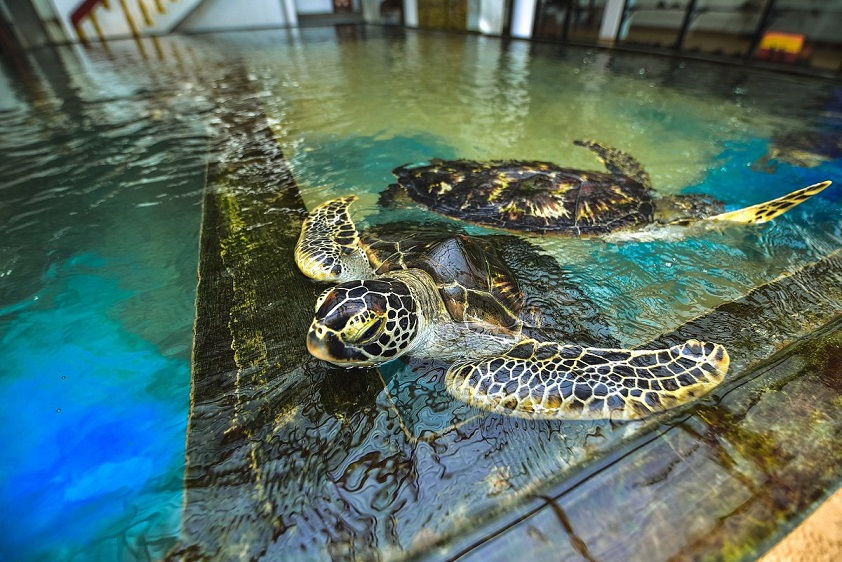
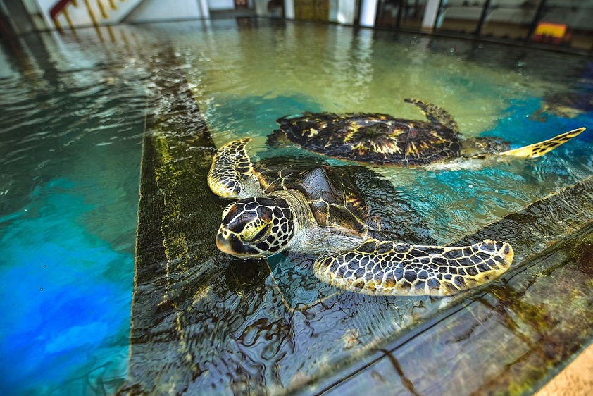
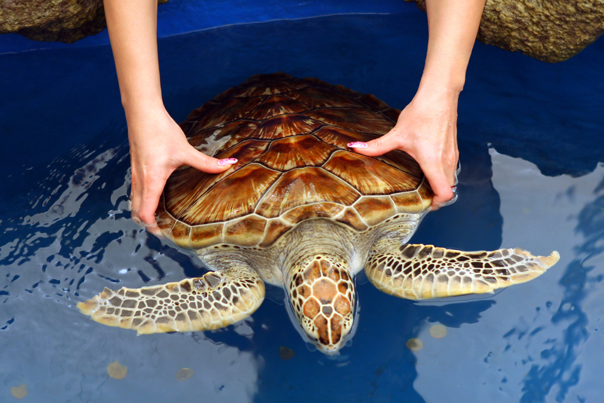
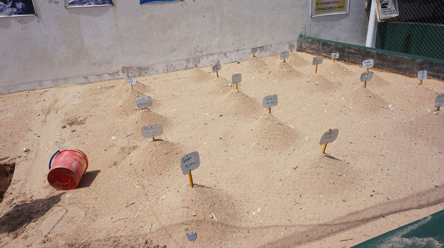
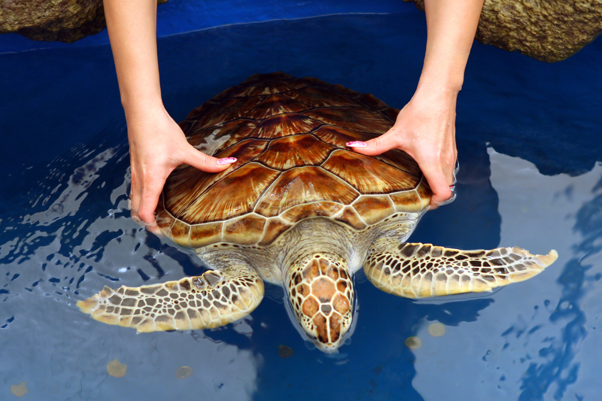
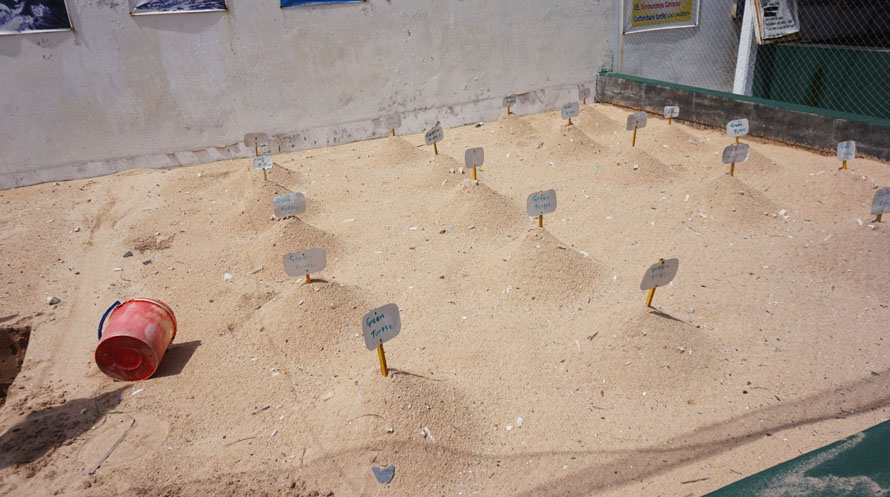

Hikkaduwa Turtle Hatchery
The Hikkaduwa Turtle Hatchery is a haven devoted to the preservation and safeguarding of sea turtles, and it is situated near the coastal town of Hikkaduwa in Sri Lanka. By rescuing and treating wounded turtles, as well as assuring the successful hatching and release of thousands of turtle hatchlings each year, the hatchery plays a crucial part in preserving turtle populations. Tourists at the hatchery have the chance to observe the care given to sick or injured turtles, take part in feeding sessions for the animals, and even release young turtles back into the ocean. A special opportunity to interact with these amazing animals and actively support their conservation efforts is provided by the Hikkaduwa Turtle Hatchery. Some of the things that can be done there are,going on a turtle hatchery tour, turtle feeding, releasing the baby turtles and visiting the souveneir shop.
 

 


